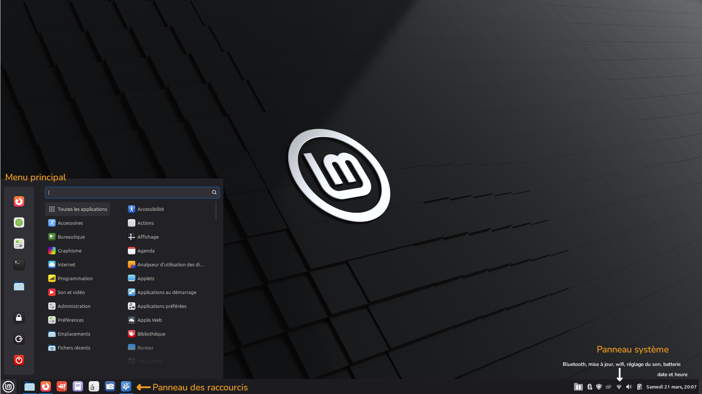

Installation de Linux Mint
Boot Linux Mint
- Insérez votre clé USB dans l'ordinateur.
- Redémarrez l'ordinateur et taper la touche spéciale (F2 ou Del) pour entrer dans le BIOS.
- Modifier le BIOS pour démarrer sur la clé USB en mode EFI.
- A l'affichage un menu grub, appuyez [Enter] pour démarrer Linux Mint à partir de la clé USB.
Installation de Linux Mint sur l'ordinateur
- Double-cliquez sur l'icône [Installer Linux Mint].
- Sélectionnez votre langue.
- Se connecter à Internet.
- Cochez la case pour installer les codecs multimédias.
- Si Linux Mint est le seul système d'exploitation que vous souhaitez exécuter et que toutes les données peuvent être perdues sur le disque dur, choisissez [Effacer le disque et installer Linux Mint].
- Sélectionnez votre fuseau horaire.
- Sélectionnez votre disposition de clavier.
- Entrez vos informations d'utilisateur : - Votre name (il est uniquement utilisé sur l'écran de connexion et de veille). - Votre username est votre nom de connexion (n'utilisez que des caractères minuscules, sans ponctuation ni accentuation) - Votre hostname est le nom de votre ordinateur sur le réseau. - Pour protéger vos données personnelles contre les attaques locales, cochez [Chiffrer mon dossier personnel]. - Choisissez un mot de passe (il vous sera demandé à chaque démarrage ou mise à jour du système)
- Profitez du diaporama pendant que Linux Mint s'installe sur votre ordinateur.
- Lorsque l'installation est terminée, cliquez sur [Redémarrer maintenant].
Personnalisation de l'installation
- Installer les codecs multimédias.
- Installer/Supprimer les langages du système.
- Effectuer les mises à jour.
- Paramétrer le thème de l'ordinateur.
- Installer les applications supplémentaires.
- Placer les raccourcis sur le panneau.
- Créer une sauvegarde instantanée du système (Timeshift). Ainsi, si quelque chose ne va pas, vous pouvez restaurer votre système à partir d'une sauvegarde antérieure.
